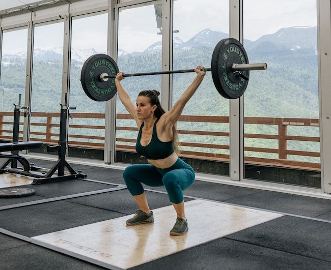

La halterofilia siempre ha contado con participación femenina desde sus albores, pero entre el público amateur, no ha tenido tanta suerte.
Gracias al CrossFit, esta tendencia ha empezado a cambiar. Para contribuir a ese crecimiento, traemos un artículo con todos los beneficios de la halterofilia en mujeres.
La halterofilia o levantamiento de pesas es una disciplina deportiva consistente en levantar el máximo peso posible en dos movimientos: el «snatch» o arrancada, y el «clean & jerk» o dos tiempos.

Te mostramos los más destacados que podrás aprovechar si realizar habitualmente este deporte:
Está visto que el ejercicio físico antes y durante la pubertad tiene un impacto positivo por lo siguiente:
1. Mejora de habilidades motoras
2. Incremento de masa magra
3. Reducción de masa grasa
4. Mejora de la salud ósea
Uno de los mayores mitos en la actividad física para mujeres tiene que ver con la menstruación: ¿quién no ha culpado alguna vez al período de un bajón en el rendimiento?
La mejor manera de adaptar el entrenamiento a nuestro ciclo menstrual es llevar un registro de síntomas, sensaciones subjetivas y, por supuesto, rendimiento durante el mes. En general, podemos encontrar que:
Muchas mujeres batallamos con un sinfín de miedos inespecíficos y generalizados (el pino, el salto al cajón, los movimientos overhead, el rope climb, etc.) por la vulnerabilidad psicológica que presentamos para la ansiedad.
La halterofilia es de los mejores deportes para salir de nuestra zona de confort, y encontrar modos eficaces y seguros de enfrentar nuestros miedos e inseguridades.
Una de las consecuencias más visibles de la práctica regular de halterofilia, es el incremento en el tono muscular en tren superior e inferior.
Esto, indiscutiblemente, tiene un efecto positivo en la percepción de nuestra imagen corporal.
Ya no se asocian los músculos únicamente al público masculino, sino que a nivel sociocultural, empieza a verse como algo deseable en niñas y mujeres.
La autoestima es una variable psicológica de gran impacto en el bienestar mental, porque representa el afecto que siento hacia mí misma. Un autoestima saludable:
La autoestima física es una de las parcelas más relevantes dentro del autoestima, ya que nuestro cuerpo es el principal vehículo de comunicación social.
La halterofilia influye positivamente en la autoestima física no solo por los cambios que genera en la composición corporal, sino también por la percepción de mi estado de salud en general y de mis habilidades físicas.